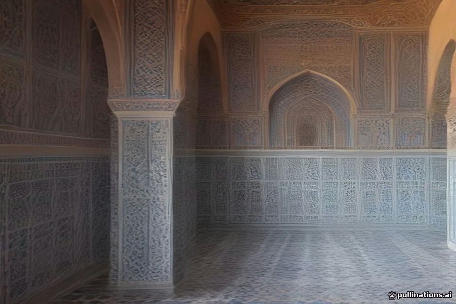

Driving from Marrakesh to the Erg Chebbi dunes along the standard N9 highway takes you over the Tizi n'Tichka pass, stopping at Ait Benhaddou before continuing toward Ouarzazate. Two common detours tempt travelers along this corridor: turning off onto the P1506 mountain road to visit the decaying Telouet Kasbah, and dipping into the Palmeraie of Skoura to visit Kasbah Amridil.
Both locations offer authentic historical context that polished tourist stops often lack, but they come at a direct cost: hours of extra driving. On a 3-day Marrakesh-to-Merzouga itinerary, taking both detours turns an already long driving day into a exhausting one. Deciding whether to include them depends entirely on your overall pace, your tolerance for mountain roads, and how many days you have total.
Telouet Kasbah: The Ounila Valley Route
To reach Telouet, you leave the primary N9 highway shortly after crossing the High Atlas summit and take the P1506 through the Ounila Valley. Telouet Kasbah was the former stronghold of the Glaoui family, who controlled the caravan routes over the Atlas mountains until the mid-20th century. While much of the exterior is crumbling mudbrick, the interior contains remarkably preserved zellij tilework, carved stucco, and cedarwood ceilings that rival the palaces of Marrakesh.
The trade-off is driving time and road condition. The P1506 is paved, but it is narrow, winding, and closely hugs the canyon edges. Choosing this route adds roughly 60 to 90 minutes of pure driving time compared to staying on the direct N9 highway, not counting the 45 minutes spent exploring inside.
Skoura Oasis: Kasbah Amridil and the Palmeraie
Skoura lies about 40 kilometers east of Ouarzazate along the N10 highway. Unlike the rocky hammada surrounding it, Skoura is a lush, sprawling oasis fed by seasonal rivers. The primary draw here is Kasbah Amridil, a 17th-century fortified mudbrick complex that remains one of the best-preserved examples of traditional oasis architecture in Morocco.
The turnoff from the main road into the oasis is short, but navigating the dirt tracks between palm groves to reach Amridil takes time. Exploring the kasbah and walking through the palms adds about 1.5 to 2 hours total to your afternoon. It is quiet, educational, and far less commercialized than Ait Benhaddou, but it pushes your arrival at your evening hotel further into the late afternoon.
Evaluating the Trade-off: 3-Day vs. 4-Day Itineraries
On a standard 3-day desert tour, Day 1 requires driving almost 350 kilometers from Marrakesh to the Dades Valley or Ouarzazate. If you attempt both Telouet and Skoura in a single day, total driving time jumps from 6 hours to nearly 9 hours. You will spend almost the entire day in the car, leaving little room for unhurried lunch stops or scenic roadside breaks.
If you have 4 or 5 days for your trip, these detours make complete sense. A longer schedule allows you to spend night one in Skoura or the Ounila Valley, breaking up the driving distance and allowing you to appreciate the architecture without constantly checking the clock.
Road Conditions and Motion Sickness
The P1506 road through the Ounila Valley involves continuous sharp bends, steep drop-offs, and narrow sections where passing oncoming vehicles requires pulling onto the unpaved shoulder. If anyone in your party suffers from motion sickness, this stretch can be challenging. Read our notes on managing motion sickness on Tichka Pass before committing to this option.
Additionally, large vehicles like 17-seat minibuses often avoid the Telouet detour altogether due to road width restrictions. 4x4 vehicles and standard passenger cars handle the paved route without issue, provided weather conditions are clear.
| Route Option | Added Drive Time | Road Character | Best Used For |
|---|---|---|---|
| Direct N9 Route | 0 hours (Baseline) | Wide, repaved mountain highway | Tight 3-day itineraries with limited daylight |
| Telouet Detour (P1506) | +1.5 hours | Narrow canyon road, tight turns | History enthusiasts on 4+ day trips |
| Skoura Oasis Stop | +1 to 1.5 hours total | Main highway plus short gravel tracks | Photographers and relaxed afternoon schedules |
| Both Detours Combined | +2.5 to 3 hours total | Mixed mountain pass and oasis tracks | Slow-travel private tours (4-5 days) |

Illustration, not a photograph — for the real thing, you'll have to stand on the ridge yourself.
Quick answers
A few follow-up questions travelers ask about this.
Is Telouet Kasbah open to visitors after the 2023 earthquake?
Parts of the main structure sustained structural damage, but local guides provide access to the safe, restored interior rooms. Conditions can change, so confirm with your driver before turning off the main highway.
Is Kasbah Amridil better than Ait Benhaddou?
Ait Benhaddou is vastly larger and more iconic visually, but heavily touristy. Kasbah Amridil is smaller, better explained by on-site family guides, and offers a quiet, uncrowded look at daily oasis life.
Can standard 2WD cars drive the Telouet road?
Yes, the P1506 between Tizi n'Tichka, Telouet, and Ait Benhaddou is entirely paved. A 4x4 is not required under normal weather conditions, though high clearance is helpful during rainy periods.
Planning your own route?
Tell us your dates and what matters to you — we'll answer with a straight recommendation, not a brochure.
Send an inquiry See the itineraries